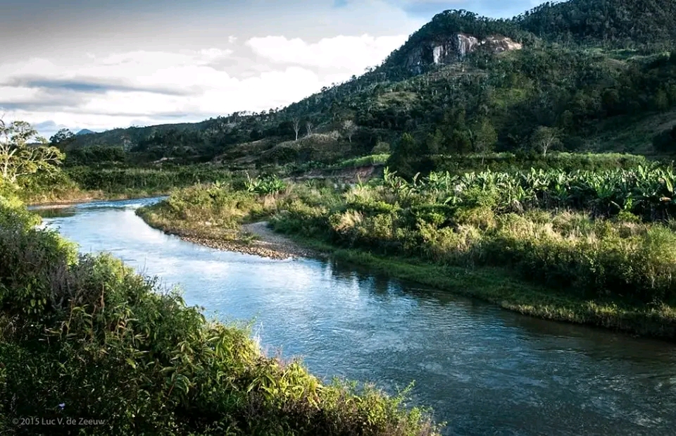
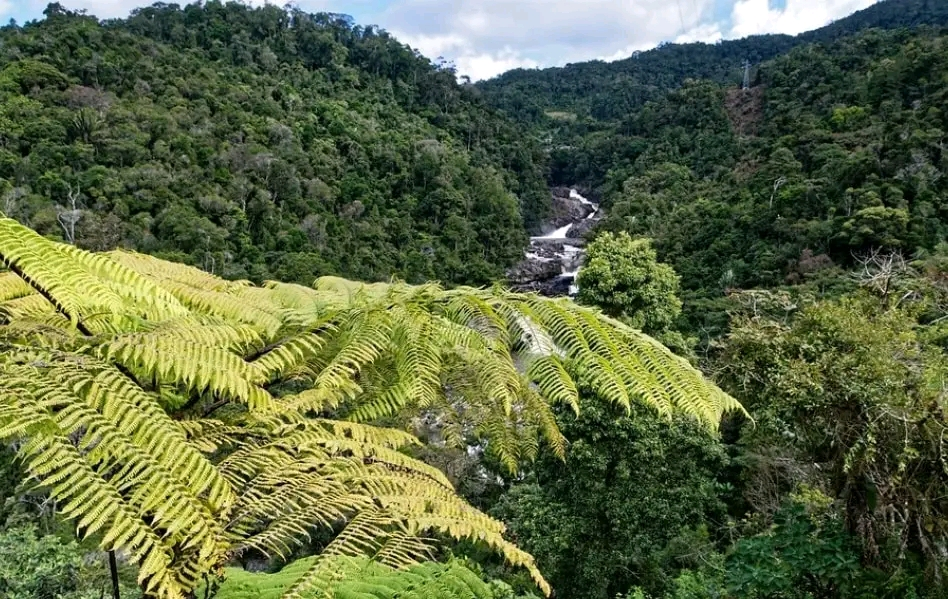

Parc National de Ranomafana

Le parc national de Ranomafana est un parc malgache situé dans la province de Fianarantsoa. Créé en 1991, il est inclus en 2007 dans le site du patrimoine mondial des forêts humides de l'Atsinanana.
Géographie
Situé à 65 km au Nord-Est de Fianarantsoa, le parc couvre un peu plus de 41 600 ha de collines aux pentes raides, à une altitude comprise entre 600 et 1400 m.
Histoire
Le classement du parc fait suite à la découverte du lémurien bambou doré (Hapalemur aureus), une espèce unique à cette zone.
Patrimoine naturel
Les forêts tropicales humides du parc abritent une extraordinaire biodiversité, avec de nombreuses espèces endémiques de Madagascar.
